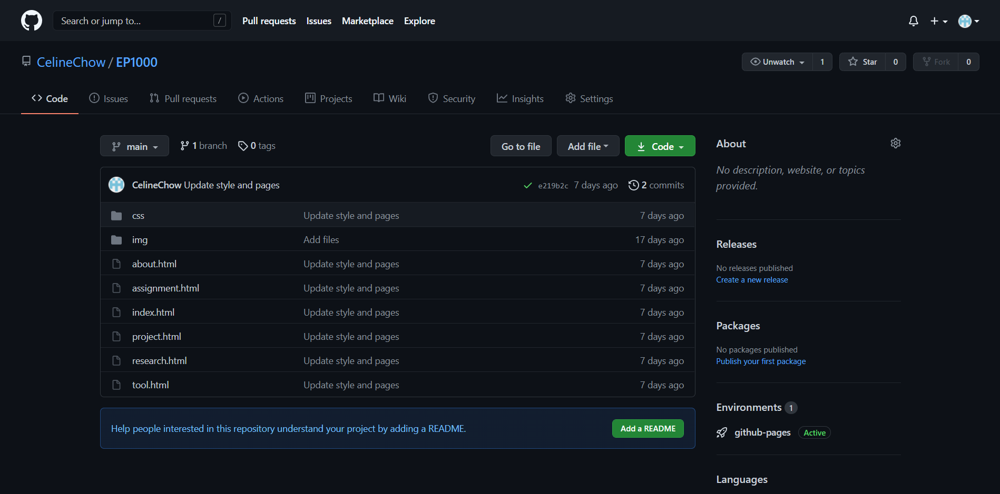
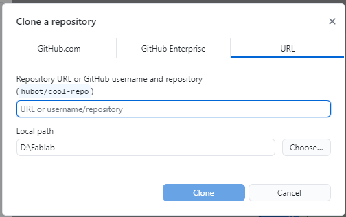
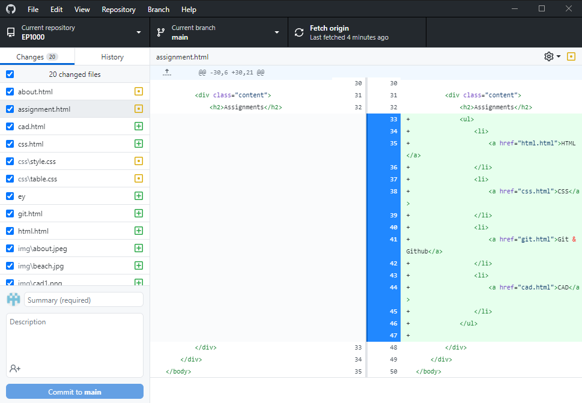
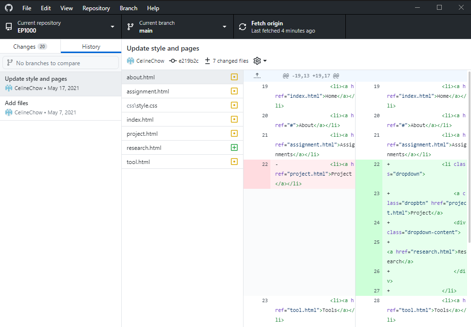

About Git & GitHub
Git is a software that can track changed in a set of files, and is often used to implement version control. It is
currently the most commonly used
software for version control, and is free and open-source.
GitHub is a cloud-based service for developers, which uses Git and a number of other features to allow developers to
store, manage, and implement version
control for their code between devices and other developers. In addition, GitHub Pages allows users to host static
webpages that is available to the public.
Using GitHub
To use GitHub, first you have to create an account. I already had an account as I have used GitHub for past modules, so
I could move to the next step.
GitHub organises files in repositories, which is a space to store all files related to a project. Any account can make
an unlimited number of repositories.
When creating a repository, some information is required.
You can give the repo a name, choose if it will be public or private, and initialise the repository with some other optional files. After creating a repository, it will look like this.
GitHub Pages
Using Git
Git most commonly implemented in the command line, and has a number of functions.
| git config | Sets git configuration values for the project |
| git init | Initialises a new local repository |
| git clone [url] | Clones a remote repository |
| git add [file name] | Stages changes to the files listed |
| git commit | Commits the staged changes to the local repository |
| git push | Pushes the commited changes to the remote repository |
| git pull | Pulls the most recent version of the remote repository into the local repository |
GitHub Desktop
GitHub Desktop provies a GUI (Graphical User Interface) to use git commands.
git clone
git add, git commit, git push, git status
git log, git checkout